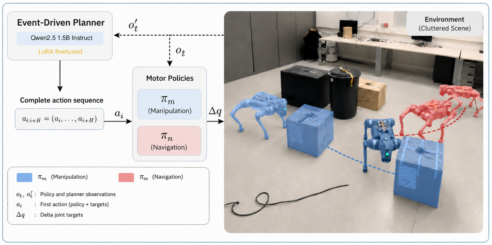

Anonymous Authors (under review).
The data can be downloaded from the link below. The code opens a 2D PyGame environment that visualizes the trajectories. Use "Up" and "Down" keys to switch between trajectories, "Right" and "Left" to progress the states for multi-state trajectories.
Robotic navigation typically assumes that a feasible collision-free route exists between the robot and its goal; however, in cluttered environments containing movable obstacles, reaching the goal may require physical interaction with the environment to create such a route. Classical solutions encode these behaviors through geometric rules and task-specific interaction logic, while existing learning-based approaches often formalize the planning problem through constrained abstractions of the decision space, such as low-dimensional motion commands or predefined action sets. We instead consider a broader decision space, in which the planner jointly selects the appropriate skill, the relevant object when applicable, and a geometric target. Our planner is formulated as a language-conditioned task planner, leveraging the relevant priors of pre-trained models related to goals, obstacles, and physical interaction. To that end, we finetune a pretrained language model using LoRA on synthetically generated demonstrations to map natural-language task descriptions and a structured scene representation to variable-length sequences of parameterized navigation and manipulation actions, executed by low-level policies trained with model-free reinforcement learning (RL). The resulting planner composes learned manipulation and navigation skills to solve a task structure excluded from training, and generates the correct plan for 20/30 trajectories compared with 17/30 for a task-specific classical planner. At the low level, we introduce an end-to-end whole-body planar manipulation policy specialized for object pushing. In simulation, the proposed policy achieves a 93.3% success rate compared with 83.5% for the commonly-used hierarchical manipulation baseline, while reducing task-completion time by more than 60%. Evaluation of the complete hierarchy over 45 hardware trials yields the correct skill composition in 44/45 trials and successful end-to-end task execution in 34/45 trials.

Overview of the proposed planar loco-manipulation framework.
We generate synthetic training data in a 2D environment and apply targeted augmentation to efficiently expand the dataset. An LLM-based task planner is fine-tuned on this data to enable structured decision-making under varying scene configurations, requiring different skill compositions to solve the task objective. At the low level, we study the behavioral differences between hierarchical and end-to-end loco-manipulation policies, motivating the design of our control stack. Consequently, we introduce a specialized end-to-end manipulation policy that exhibits adaptive and natural interaction behaviors in real-world settings.
Real-world execution of the complete loco-manipulation framework across interactive navigation, long-horizon interactive navigation, and shifted task structures.
Manipulation → Navigation
Navigation → Manipulation → Navigation
Manipulation → Navigation → Manipulation